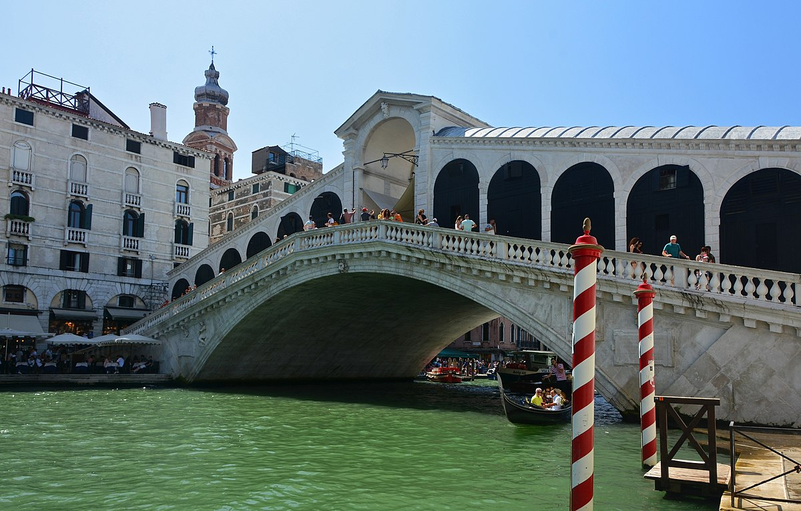
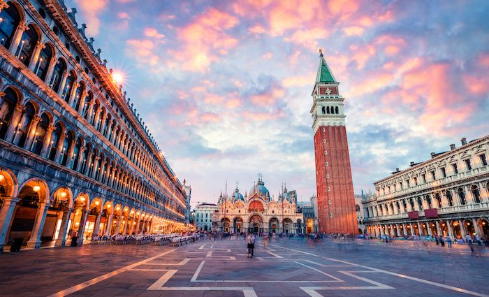
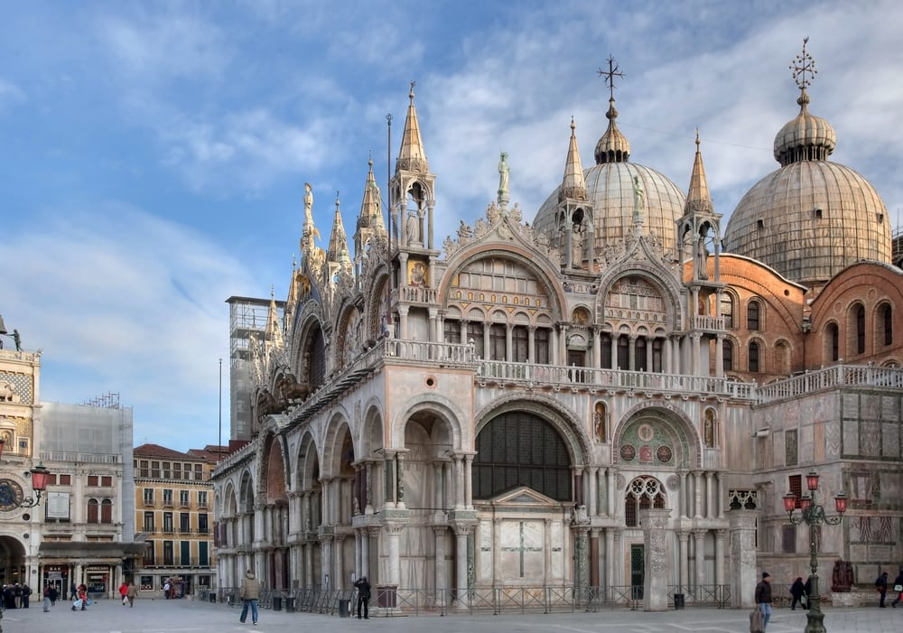
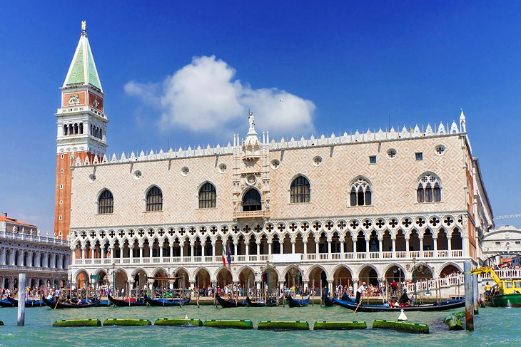

- Rialto Bridge 
- St. Mark's Square 
- Saint Mark's Basilica 
- Grand Canal
- Doge's Palace 

Venice is the capital of the Veneto region and is located in northeastern Italy.This city may also be known as the "City of Canals", "The Floating City", and "Serenissima. This city is a very popular travel destination among the world!